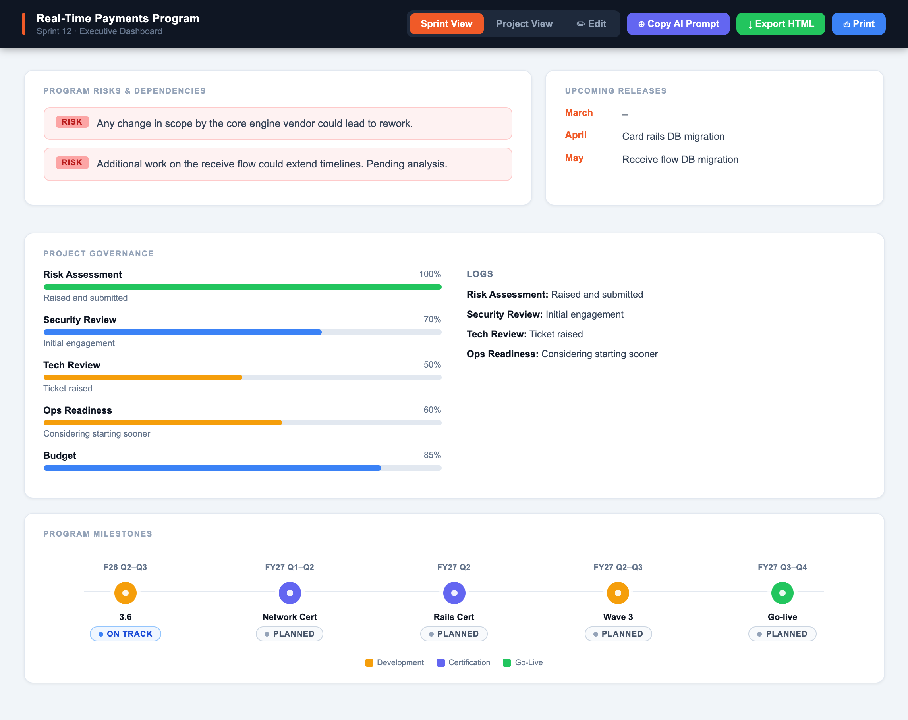
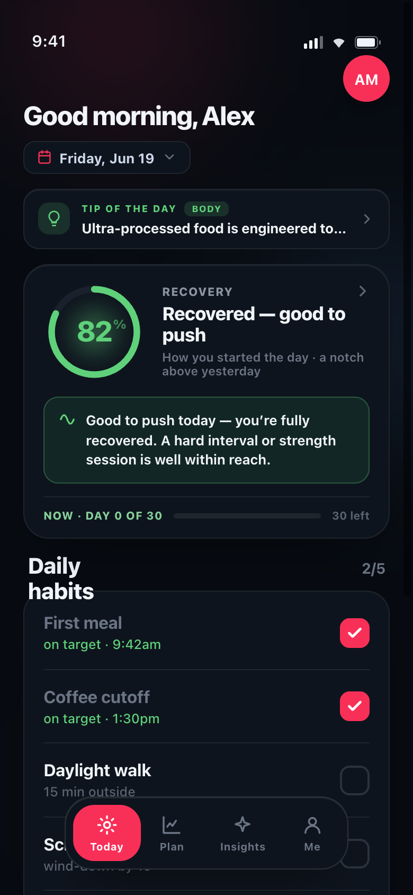
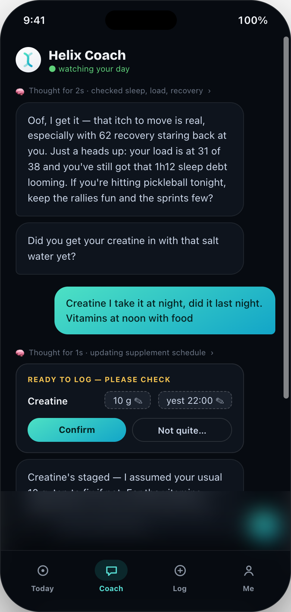
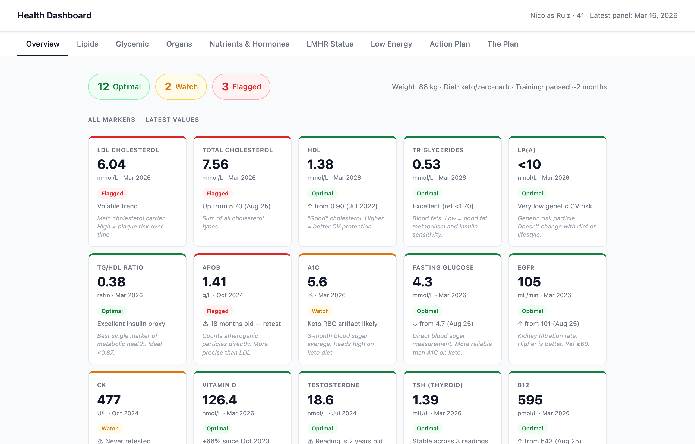
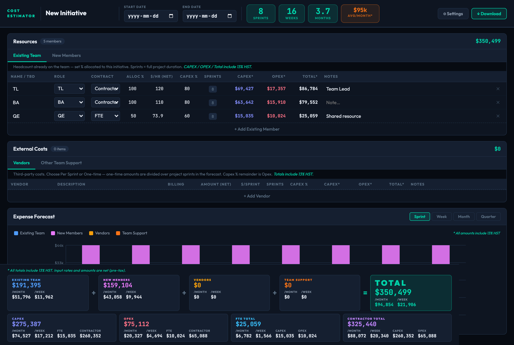
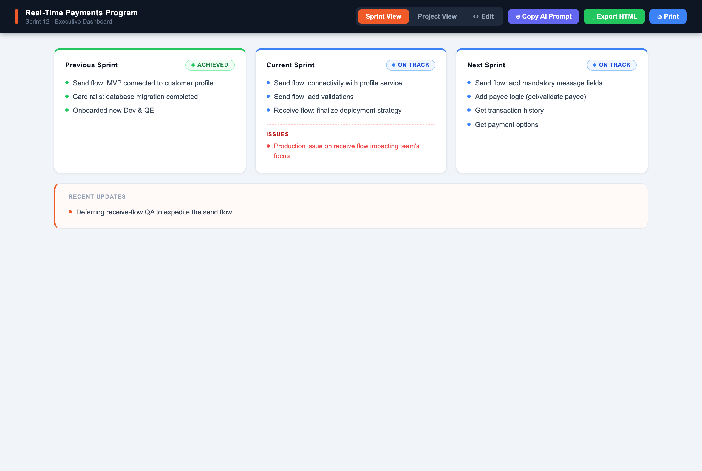
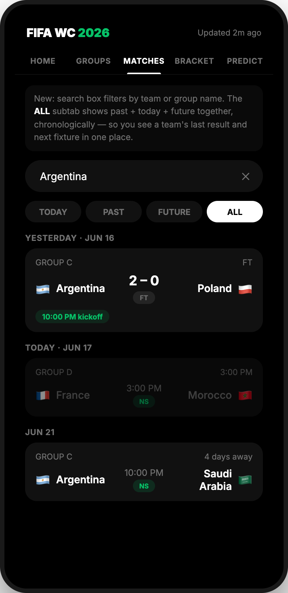
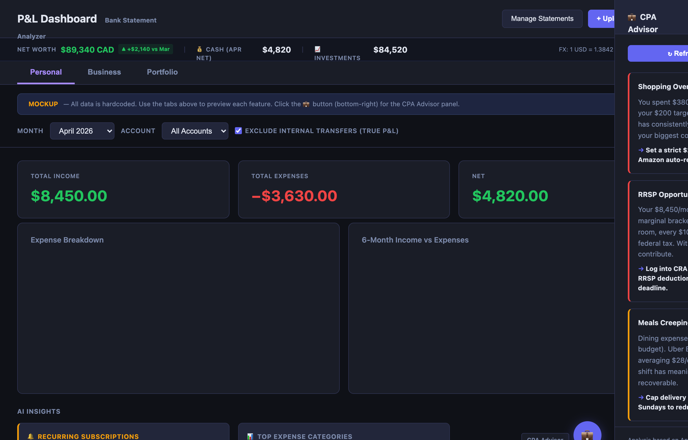

A collection of personal prototypes and tools I build on my own time to explore AI, automation, and data-driven problem solving.


AI-powered coaching concept that adapts to performance and progression over time.

Conversational recovery, training-load and health tracking concept.

Analyze multi-year lab trends and prioritize health actions.

Estimate team, timeline and cost scenarios with data-driven modeling.

Real-time KPI monitoring and strategic insight for executive decision-making.

Schedules, standings, match links and finished-game highlights.

Track net worth, budgets and spending analysis from raw statements.
Prompt testing & evaluation
Extract and summarize PDFs with AI
Automated data cleaning rules
Summarize and extract action items
Explore repositories and code
Let's build something meaningful with AI.